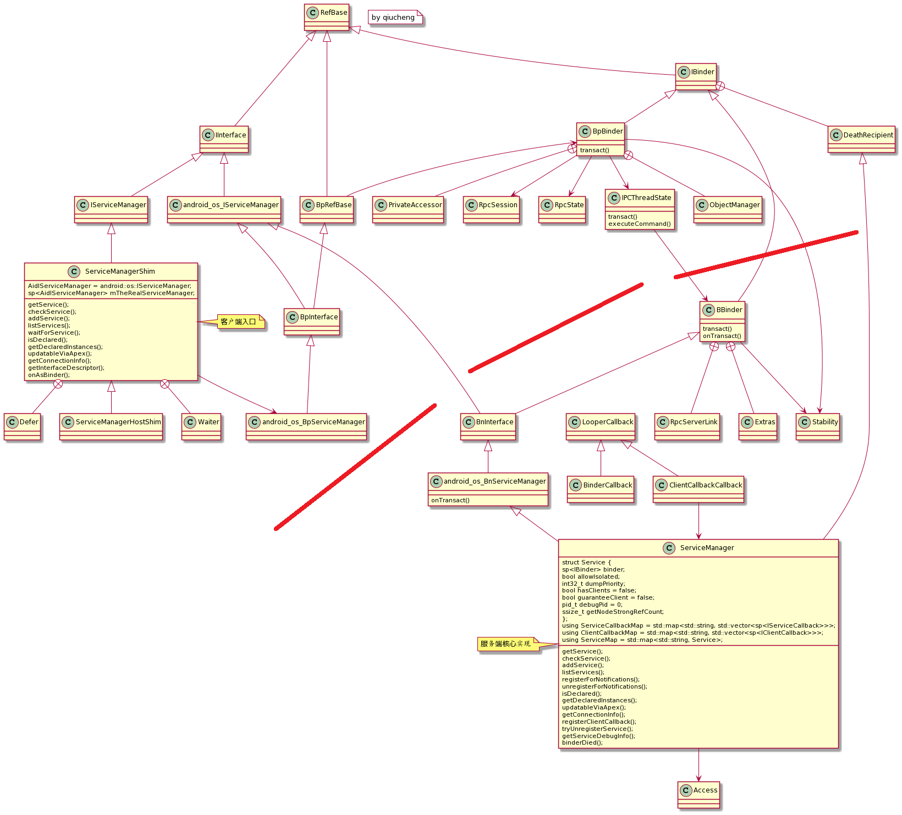
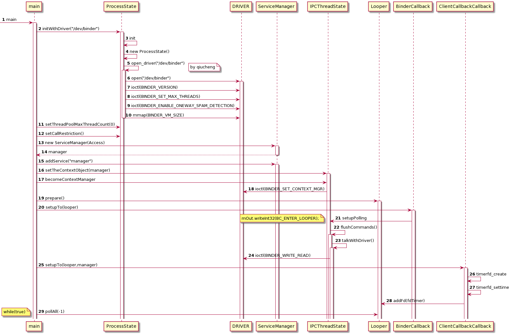
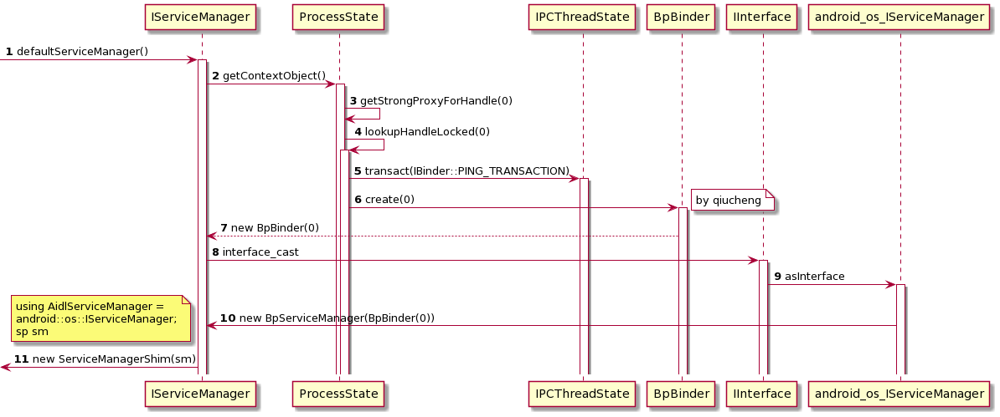
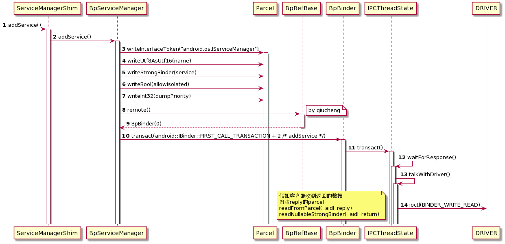
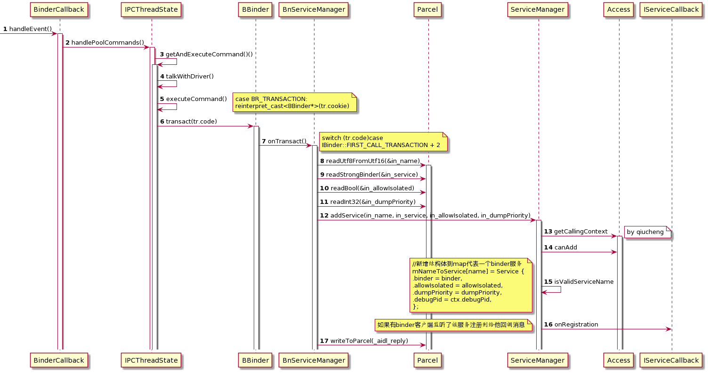

Android 12 Native Binder 代码变迁
注：广义上 Native Binder 可理解为包含 VND，HW，RPC 等内容，本文所讨论的 Native Binder 指的仅是 servicemanager 服务程序及 libbinder 中相关代码，不做广义的延伸。
一、前言¶
servicemanager 程序（以下简称 SM ）是 Android 系统 Binder 模块重要的组成部分，扮演着类似 C/S 架构中的 DNS 服务器的角色，提供服务增查和权限管理等功能支撑。
在 Android 11 之前的版本里，SM 是**面向 Binder 驱动编程**，直接使用 open、mmap、ioctl 等 API 与 Binder 驱动交互。而从 Android 11 开始，SM 放弃使用这些较底层的接口，转向 libbinder 库和 AIDL。标志性的提交如下，该提交奠定了新的 SM 架构基础，此后多次提交对此进行完善填充。
frameworks/native
servicemanager: use libbinder
Bug: 135768100
Test: boot
Test: servicemanager_test
Change-Id: I9d657b6c0d0be0f763b6d54e0e6c6bc1c1e3fc7a
(cherry picked from commit 3e092daa14c63831d76d3ad6e56b2919a0523536)
smoreland@google.com（作者）
提交日期2019-07-09 AM 9:54
本文代码基于 Android 12 ，以 SM 为主视角，从架构和情景流程上带大家认识新的 Native Binder。
二、软件架构¶
2.1、架构概述¶

图1：切换到 AIDL 和 libbinder 后的 ServiceManager 类关系图
图注：
为了画图方便，将 namespace 写成了下划线形式。
android_os_BpServiceManager 和 android_os_BnServiceManager、android_os_IServiceManager 类均在 android os 的 namespace 中，其他无下划线的类名，处于 android namespace 中。
一图胜千言，11 之前的 SM 是写在 c 文件里，没有类的概念，现在基于 AIDL 和 libbinder，使用 CPP 语言，用 UML 就可以很形象地展示类关系了。就着这幅图我们大致描述新的软件架构。
- 红色线段大概地将服务端与客户端类相分隔，服务端在右下角。
一些 libbinder 的用于继承的公共类请读者自行剥离，而不是将其归入某一端。例如 IBinder，我们知道他是 BBinder 和 BpBinder 的父类，是公共的接口约束。
- libbinder 中客户端的入口变为：IServiceManager.cpp#ServiceManagerShim
之前无该辅助类，而是直接操作 BpServiceManager，这个辅助类封装了 AIDL 自动生成的 BpServiceManager，所以现在的客户端代码流就变成如下三步：
1.用户代码
2.libbinder 代码 binder/IServiceManager.cpp#ServiceManagerShim
3.AIDL 代码 android/os/IServiceManager.cpp#BpServiceManager 接口
所以 libbinder 中的 ServiceManagerShim 起到了一个中转的作用，把请求转给 out 下 AIDL 自动生成的 BpServiceManager。
- BpServiceManager 的实现挪到 out
原来是在 libbinder#IServiceManager.cpp 中手写实现，现在是 AIDL 帮你实现。
当然，该文件中同样自动实现了 BnServiceManager类
代码路径
out/soong/.intermediates/frameworks/native/libs/binder/libbinder/android_arm64_armv8-a_shared/gen/aidl/android/os/IServiceManager.cpp
- 服务端的核心实现在 ServiceManager.cpp
原来是没有 Bn 的，而是一个 binder_loop 方法沟通驱动，现在则是 ServiceManager 继承了 BnServiceManager 来获得代码流。
- waitForService的改动：IServiceCallback.aidl
Waiter 类。新增了 Binder 匿名服务用来向 SM 注册跨进程的回调，当 SM 检测到有服务注册时，会返回通知。
- 服务的客户端数量监听：IServiceCallback.aidl
IServiceCallback.aidl 这个匿名 Binder 服务就是用于该目的，可以监听某个服务的客户端数量。
2.2、文件路径¶
- AIDL
AIDL 是一种方便的接口定义语言，用于 Binder-IPC 编程。详细介绍与使用可参考：AIDL Overview
我们关注三个 AIDL，分别是 IServiceManager.aidl、IServiceCallback.aidl、IClientCallback.aidl，对应的编译后生成的文件路径为：
out/soong/.intermediates/frameworks/native/libs/binder/libbinder/android_arm_armv8-a_shared/gen/aidl/android/os/
IClientCallback.cpp
IServiceCallback.cpp
IServiceManager.cpp
- libbinder 中的代码路径
frameworks/native/libs/binder/IServiceManager.cpp
- SM 服务端代码路径
frameworks/native/cmds/servicemanager/
main.cpp
Access.cpp
ServiceManager.cpp
本小节仅展示涉及变迁的文件路径。简洁起见只写了 CPP 文件，对应的h头文件可以附近查找。
另外需要特别区分的是，有两个 IServiceManager 。
一个在 libbinder 中，是 android 的 name space，直接被用户 #include<binder/IServiceManager> 使用。
另一个是aidl自动生成的 android os 的 name space，被上面的 libbinder 所使用 #include<android/os/IServiceManager>。
2.3、小结¶
第二章节从全局的角度展示了 SM 切换到 AIDL 和 libbinder 的软件架构，结合图来看还是非常清楚易于理解的。
接下来跟踪几个情景流程，展示新架构中的细节。
三、servicemanager 启动流程分析¶

图2：servicemanager 启动时序图
如上图，启动流程的变动主要在进入循环的方式，Android 11 之前是通过 binder_loop 方法，而现在是通过 looper。下面展示细节。
frameworks/native/cmds/servicemanager/main.cpp
int main(int argc, char** argv) {
if (argc > 2) {
LOG(FATAL) << "usage: " << argv[0] << " [binder driver]";
}
const char* driver = argc == 2 ? argv[1] : "/dev/binder";
//沟通 Binder 驱动，open，mmap
sp<ProcessState> ps = ProcessState::initWithDriver(driver);
ps->setThreadPoolMaxThreadCount(0);
//oneway 限制，SM 发起的 Binder 调用必须是单向，否则打印堆栈日志提示
ps->setCallRestriction(ProcessState::CallRestriction::FATAL_IF_NOT_ONEWAY);
//实例化 ServiceManager，传入 Access 类用于鉴权
sp<ServiceManager> manager = sp<ServiceManager>::make(std::make_unique<Access>());
if (!manager->addService("manager", manager, false /*allowIsolated*/, IServiceManager::DUMP_FLAG_PRIORITY_DEFAULT).isOk()) {
LOG(ERROR) << "Could not self register servicemanager";
}
//设置全局变量给 IPCThreadState
IPCThreadState::self()->setTheContextObject(manager);
//注册到驱动，成为 Binder 管理员，handle 是 0
ps->becomeContextManager();
//准备 looper
sp<Looper> looper = Looper::prepare(false /*allowNonCallbacks*/);
//通知驱动 BC_ENTER_LOOPER ，监听驱动 fd ，有消息时回调到 handleEvent 处理 binder 调用
BinderCallback::setupTo(looper);
//服务的注册监听相关
ClientCallbackCallback::setupTo(looper, manager);
//无限循环等消息
while(true) {
looper->pollAll(-1);
}
// should not be reached
return EXIT_FAILURE;
}
和原来的 servicemanager 服务相比较，使用了 libbinder 后，代码更规范化，和其他 Native 的服务风格趋于一致。
-
之前是直接 open、mmap 现在是借助 libbinder
-
之前是 binder_loop 死循环接收驱动的消息，现在是通过 looper 监听 fd 来 handleEvent
-
之前的鉴权现在被独立到单独文件 Access.cpp
突然想起一个题目，servicemanager 映射的虚拟内存有多大？现在的答案是和普通应用一样大：1 M - 2 页。
frameworks/native/libs/binder/ProcessState.cpp
启动流程比较清晰不多赘述，下一小节看 addService 的流程。
四、addService 流程分析¶
 图3：defaultServiceManager 流程
 图4：addService 客户端流程
 图5：addService 服务端流程
先上图，总览 Native 的代码流程，客户端是 libbinder 里的 IServiceManager.cpp，服务端是我们的 ServiceManager.cpp
4.1、ServiceManagerShim::addService¶
frameworks/native/libs/binder/IServiceManager.cpp
status_t ServiceManagerShim::addService(const String16& name, const sp<IBinder>& service,
bool allowIsolated, int dumpsysPriority)
{
Status status = mTheRealServiceManager->addService(
String8(name).c_str(), service, allowIsolated, dumpsysPriority);
return status.exceptionCode();
}
直接使用的 mTheRealServiceManager，澄清疑问，mTheRealServiceManager 是谁？
4.1.1、mTheRealServiceManager 是谁？¶
frameworks/native/libs/binder/IServiceManager.cpp
#include <android/os/IServiceManager.h>
using AidlServiceManager = android::os::IServiceManager;
class ServiceManagerShim : public IServiceManager
{
protected:
sp<AidlServiceManager> mTheRealServiceManager;
......
ServiceManagerShim::ServiceManagerShim(const sp<AidlServiceManager>& impl)
: mTheRealServiceManager(impl)
{}
可以看到，mTheRealServiceManager 就是一个 android::os::IServiceManager 类型的实例，并且在 ServiceManagerShim 实例化时赋值。
那么 ServiceManagerShim 何时实例化呢？答案是 defaultServiceManager() 中
frameworks/native/libs/binder/IServiceManager.cpp
sp<IServiceManager> defaultServiceManager()
{
std::call_once(gSmOnce, []() {
sp<AidlServiceManager> sm = nullptr;
while (sm == nullptr) {
//1、拿到 AidlServiceManager 类型的 BpServiceManager(new BpBinder(0)) 实例
sm = interface_cast<AidlServiceManager>(ProcessState::self()->getContextObject(nullptr));
if (sm == nullptr) {
ALOGE("Waiting 1s on context object on %s.", ProcessState::self()->getDriverName().c_str());
sleep(1);
}
}
//2、new ServiceManagerShim
gDefaultServiceManager = sp<ServiceManagerShim>::make(sm);
});
return gDefaultServiceManager;
}
如注释 1、2，mTheRealServiceManager 就是在这样流程中赋值的。他的真是面目是 BpServiceManager(new BpBinder(0))。
由图1可知，我们拿到了操作 Binder 驱动的入口，BpServiceManager→BpBinder→IPCThreadState→ioctl
关于一部分旧知识会贴拓展链接本文不做展开。interface_cast 的实现可参考：浅谈Android系统进程间通信（IPC）机制Binder中的Server和Client获得Service Manager接口之路
好现在返回上节，直接走入 BpServiceManager#addService 方法
4.2、BpServiceManager::addService¶
out/soong/.intermediates/frameworks/native/libs/binder/libbinder/android_arm_armv8-a_shared/gen/aidl/android/os/IServiceManager.cpp
namespace android {
namespace os {
BpServiceManager::BpServiceManager(const ::android::sp<::android::IBinder>& _aidl_impl)
: BpInterface<IServiceManager>(_aidl_impl){//_aidl_impl 就是 BpBinder(0) 实例
}
--------------------------------------------------
::android::binder::Status BpServiceManager::addService(const ::std::string& name, const ::android::sp<::android::IBinder>& service, bool allowIsolated, int32_t dumpPriority) {
::android::Parcel _aidl_data;
_aidl_data.markForBinder(remoteStrong());//0、和 Rpc Binder有关
::android::Parcel _aidl_reply;
::android::status_t _aidl_ret_status = ::android::OK;
::android::binder::Status _aidl_status;
//1、写 interface
_aidl_ret_status = _aidl_data.writeInterfaceToken(getInterfaceDescriptor());
if (((_aidl_ret_status) != (::android::OK))) {
goto _aidl_error;
}
//2、写 name
_aidl_ret_status = _aidl_data.writeUtf8AsUtf16(name);
if (((_aidl_ret_status) != (::android::OK))) {
goto _aidl_error;
}
//3、写 binder 对象
_aidl_ret_status = _aidl_data.writeStrongBinder(service);
if (((_aidl_ret_status) != (::android::OK))) {
goto _aidl_error;
}
//4、写 allowIsolated
_aidl_ret_status = _aidl_data.writeBool(allowIsolated);
if (((_aidl_ret_status) != (::android::OK))) {
goto _aidl_error;
}
//5、写 dumpPriority
_aidl_ret_status = _aidl_data.writeInt32(dumpPriority);
if (((_aidl_ret_status) != (::android::OK))) {
goto _aidl_error;
}
//6、借助 BpBinder(0)#transact 来发起 Binder 通信
_aidl_ret_status = remote()->transact(BnServiceManager::TRANSACTION_addService, _aidl_data, &_aidl_reply, 0);
if (UNLIKELY(_aidl_ret_status == ::android::UNKNOWN_TRANSACTION && IServiceManager::getDefaultImpl())) {
return IServiceManager::getDefaultImpl()->addService(name, service, allowIsolated, dumpPriority);
}
if (((_aidl_ret_status) != (::android::OK))) {
goto _aidl_error;
}
//7、如果有返回值就从这个 parcel 包里读
_aidl_ret_status = _aidl_status.readFromParcel(_aidl_reply);
if (((_aidl_ret_status) != (::android::OK))) {
goto _aidl_error;
}
if (!_aidl_status.isOk()) {
return _aidl_status;
}
_aidl_error:
_aidl_status.setFromStatusT(_aidl_ret_status);
return _aidl_status;
}
把 Android 10 的贴上来，我们对比看看
frameworks/native/libs/binder/IServiceManager.cpp
virtual status_t addService(const String16& name, const sp<IBinder>& service,
bool allowIsolated, int dumpsysPriority) {
Parcel data, reply;
data.writeInterfaceToken(IServiceManager::getInterfaceDescriptor());
data.writeString16(name);
data.writeStrongBinder(service);
data.writeInt32(allowIsolated ? 1 : 0);
data.writeInt32(dumpsysPriority);
status_t err = remote()->transact(ADD_SERVICE_TRANSACTION, data, &reply);
return err == NO_ERROR ? reply.readExceptionCode() : err;
}
和 Android 11 之前手写的 BpServiceManager 相比，本质是没变的，就是多了些花里胡哨的规范性代码。
到这里，客户端的代码就大致展示完了，transact 再往后就是旧有的流程，可参考：浅谈Android系统进程间通信（IPC）机制Binder中的Server和Client获得Service Manager接口之路
之后走到 Binder 驱动，驱动又根据 handle == 0 找到对端，我们的 SM 进程，唤醒他开始处理请求。
4.3、BinderCallback::handleEvent¶
如图 4：addService 服务端流程，现在开始服务端的流程展示。
frameworks/native/cmds/servicemanager/main.cpp
class BinderCallback : public LooperCallback {
public:
......
int handleEvent(int /* fd */, int /* events */, void* /* data */) override {
IPCThreadState::self()->handlePolledCommands();
return 1; // Continue receiving callbacks.
}
};
之后走到 BR_TRANSACTION
frameworks/native/libs/binder/IPCThreadState.cpp
status_t IPCThreadState::executeCommand(int32_t cmd)
{
switch ((uint32_t)cmd) {
case BR_TRANSACTION:
{
if (tr.target.ptr) {
//因为目的端 SM 所以 tr.target.ptr 为 0
}else {//开始业务分发
error = the_context_object->transact(tr.code, buffer, &reply, tr.flags);
}
the_context_object 是 SM 启动的时候设置好的
sp<BBinder> the_context_object;
void IPCThreadState::setTheContextObject(const sp<BBinder>& obj)
{
the_context_object = obj;
}
是 ServiceManager 类实例，所以也是一个 BBinder 对象，所以就有了 transact()→onTransact() 的处理能力。
所以现在 the_context_object->transact() 调用就走到 BBinder 的 transact 又走到 BnServiceManager 的 onTransact() 方法，回到了这个 AIDL 自动生成的 IServiceManager.cpp 文件里。
兜兜转转还是在这个文件。
out/soong/.intermediates/frameworks/native/libs/binder/libbinder/android_arm_armv8-a_shared/gen/aidl/android/os/IServiceManager.cpp
::android::status_t BnServiceManager::onTransact(uint32_t _aidl_code, const ::android::Parcel& _aidl_data, ::android::Parcel* _aidl_reply, uint32_t _aidl_flags) {
::android::status_t _aidl_ret_status = ::android::OK;
switch (_aidl_code) {
case BnServiceManager::TRANSACTION_addService:
{
::std::string in_name;
::android::sp<::android::IBinder> in_service;
bool in_allowIsolated;
int32_t in_dumpPriority;
//检查 interface
if (!(_aidl_data.checkInterface(this))) {
_aidl_ret_status = ::android::BAD_TYPE;
break;
}
//读 name
_aidl_ret_status = _aidl_data.readUtf8FromUtf16(&in_name);
if (((_aidl_ret_status) != (::android::OK))) {
break;
}
//读 binder
_aidl_ret_status = _aidl_data.readStrongBinder(&in_service);
if (((_aidl_ret_status) != (::android::OK))) {
break;
}
//读 in_allowIsolated
_aidl_ret_status = _aidl_data.readBool(&in_allowIsolated);
if (((_aidl_ret_status) != (::android::OK))) {
break;
}
//读 in_dumpPriority
_aidl_ret_status = _aidl_data.readInt32(&in_dumpPriority);
if (((_aidl_ret_status) != (::android::OK))) {
break;
}
//调用真正的 ServiceManager.cpp 中的实现
::android::binder::Status _aidl_status(addService(in_name, in_service, in_allowIsolated, in_dumpPriority));
//如果有返回写返回到 _aidl_reply
_aidl_ret_status = _aidl_status.writeToParcel(_aidl_reply);
if (((_aidl_ret_status) != (::android::OK))) {
break;
}
if (!_aidl_status.isOk()) {
break;
}
}
和 Bp 端是对称的操作，下一步走到 ServiceManager.cpp::addService 方法
4.4、ServiceManager::addService¶
frameworks/native/cmds/servicemanager/ServiceManager.cpp
Status ServiceManager::addService(const std::string& name, const sp<IBinder>& binder, bool allowIsolated, int32_t dumpPriority) {
auto ctx = mAccess->getCallingContext();
// uid 鉴权
if (multiuser_get_app_id(ctx.uid) >= AID_APP) {
return Status::fromExceptionCode(Status::EX_SECURITY);
}
// selinux 鉴权
if (!mAccess->canAdd(ctx, name)) {
return Status::fromExceptionCode(Status::EX_SECURITY);
}
if (binder == nullptr) {
return Status::fromExceptionCode(Status::EX_ILLEGAL_ARGUMENT);
}
//检查 name 命名
if (!isValidServiceName(name)) {
LOG(ERROR) << "Invalid service name: " << name;
return Status::fromExceptionCode(Status::EX_ILLEGAL_ARGUMENT);
}
//如果 vndservicemanager 则检查 VINTF manifest
#ifndef VENDORSERVICEMANAGER
if (!meetsDeclarationRequirements(binder, name)) {
// already logged
return Status::fromExceptionCode(Status::EX_ILLEGAL_ARGUMENT);
}
#endif // !VENDORSERVICEMANAGER
//和 RPC Binder 有关，死亡监听
// implicitly unlinked when the binder is removed
if (binder->remoteBinder() != nullptr &&
binder->linkToDeath(sp<ServiceManager>::fromExisting(this)) != OK) {
LOG(ERROR) << "Could not linkToDeath when adding " << name;
return Status::fromExceptionCode(Status::EX_ILLEGAL_STATE);
}
//新增一个结构体到 map 中
// Overwrite the old service if it exists
mNameToService[name] = Service {
.binder = binder,
.allowIsolated = allowIsolated,
.dumpPriority = dumpPriority,
.debugPid = ctx.debugPid,
};
//架构中提到的 waiteForService 的跨进程
auto it = mNameToRegistrationCallback.find(name);
if (it != mNameToRegistrationCallback.end()) {
for (const sp<IServiceCallback>& cb : it->second) {
mNameToService[name].guaranteeClient = true;
// permission checked in registerForNotifications
cb->onRegistration(name, binder);
}
}
return Status::ok();
}
五、其他值得关注的细节¶
前两节是全局总览、经典情景的视角看代码，现在我们换一个视角，展示一些边边角角的内容为上面的主干填充细节。
5.1、servicemanager 的能力变化¶
11之前仅有4个接口暴露给应用
frameworks/native/libs/binder/include/binder/IServiceManager.h
enum {
GET_SERVICE_TRANSACTION = IBinder::FIRST_CALL_TRANSACTION,
CHECK_SERVICE_TRANSACTION,
ADD_SERVICE_TRANSACTION,
LIST_SERVICES_TRANSACTION,
};
而 Android 11 增加到 9 个，Android 12 又增加到 13 个
out/soong/.intermediates/frameworks/native/libs/binder/libbinder/android_arm_armv8-a_shared/gen/aidl/android/os/BnServiceManager.h
class BnServiceManager : public ::android::BnInterface<IServiceManager> {
public:
static constexpr uint32_t TRANSACTION_getService = ::android::IBinder::FIRST_CALL_TRANSACTION + 0;
static constexpr uint32_t TRANSACTION_checkService = ::android::IBinder::FIRST_CALL_TRANSACTION + 1;
static constexpr uint32_t TRANSACTION_addService = ::android::IBinder::FIRST_CALL_TRANSACTION + 2;
static constexpr uint32_t TRANSACTION_listServices = ::android::IBinder::FIRST_CALL_TRANSACTION + 3;
static constexpr uint32_t TRANSACTION_registerForNotifications = ::android::IBinder::FIRST_CALL_TRANSACTION + 4;
static constexpr uint32_t TRANSACTION_unregisterForNotifications = ::android::IBinder::FIRST_CALL_TRANSACTION + 5;
static constexpr uint32_t TRANSACTION_isDeclared = ::android::IBinder::FIRST_CALL_TRANSACTION + 6;
static constexpr uint32_t TRANSACTION_getDeclaredInstances = ::android::IBinder::FIRST_CALL_TRANSACTION + 7;
static constexpr uint32_t TRANSACTION_updatableViaApex = ::android::IBinder::FIRST_CALL_TRANSACTION + 8;
static constexpr uint32_t TRANSACTION_getConnectionInfo = ::android::IBinder::FIRST_CALL_TRANSACTION + 9;
static constexpr uint32_t TRANSACTION_registerClientCallback = ::android::IBinder::FIRST_CALL_TRANSACTION + 10;
static constexpr uint32_t TRANSACTION_tryUnregisterService = ::android::IBinder::FIRST_CALL_TRANSACTION + 11;
static constexpr uint32_t TRANSACTION_getServiceDebugInfo = ::android::IBinder::FIRST_CALL_TRANSACTION + 12;
从这些接口的变动我们也可以很清晰地把握住 servicemanager 的前进方向
5.2、DO_NOT_DIRECTLY_USE_ME_IMPLEMENT_META_INTERFACE¶
frameworks/native/libs/binder/include/binder/IInterface.h
#define IMPLEMENT_META_INTERFACE(INTERFACE, NAME) \
static_assert(internal::allowedManualInterface(NAME), \
"b/64223827: Manually written binder interfaces are " \
"considered error prone and frequently have bugs. " \
"The preferred way to add interfaces is to define " \
"an .aidl file to auto-generate the interface. If " \
"an interface must be manually written, add its " \
"name to the whitelist."); \
DO_NOT_DIRECTLY_USE_ME_IMPLEMENT_META_INTERFACE(INTERFACE, NAME) \
-----------------------------
constexpr const char* const kManualInterfaces[] = {
"android.app.IActivityManager",
"android.app.IUidObserver",
"android.drm.IDrm",
"android.dvr.IVsyncCallback",
"android.dvr.IVsyncService",
"android.gfx.tests.ICallback",
"android.gfx.tests.IIPCTest",
......
以后手写的 Native 服务需要关注下这个宏，做了限制。谷歌建议是现在的 Native 服务都用 AIDL，别手写。
5.3、String16、String8 与 name¶
AIDL 改造之前，都是一路 String16 从客户端传到服务端，而现在需要绕一些路了。还是以 addService 为例
status_t ServiceManagerShim::addService(const String16& name,){
Status status = mTheRealServiceManager->addService(
String8(name).c_str(), );
在这里转一次，16 转成 8
------------------------------------------
_aidl_ret_status = _aidl_data.writeUtf8AsUtf16(name);
在 BpServiceManager 里又转了一次，8 转 16
------------------------------------------
_aidl_ret_status = _aidl_data.readUtf8FromUtf16(&in_name);
现在来到 BnServiceManager 继续转，16 转 8
转来转去快晕了。总结就是，SM 服务端都是操作的 utf8，而 libbinder 客户端都是 utf16。有修改的话需要注意下编码问题。
也可能是由于这个转换问题，在服务端加了个服务名检查
bool isValidServiceName(const std::string& name) {
if (name.size() == 0) return false;
if (name.size() > 127) return false;
for (char c : name) {
if (c == '_' || c == '-' || c == '.' || c == '/') continue;
if (c >= 'a' && c <= 'z') continue;
if (c >= 'A' && c <= 'Z') continue;
if (c >= '0' && c <= '9') continue;
return false;
}
return true;
}
5.4、服务保存的数据结构¶
SM 需要保存服务及其对应的信息，11 前用的链表 svc_list，成员是 svc_info 结构体；11 后用的 map，成员是结构体 Service。
frameworks/native/cmds/servicemanager/ServiceManager.h
struct Service {
sp<IBinder> binder; // not null
bool allowIsolated;
int32_t dumpPriority;
bool hasClients = false; // notifications sent on true -> false.
bool guaranteeClient = false; // forces the client check to true
pid_t debugPid = 0; // the process in which this service runs
// the number of clients of the service, including servicemanager itself
ssize_t getNodeStrongRefCount();
};
using ServiceMap = std::map<std::string, Service>;
ServiceMap mNameToService;
这个 Service 结构体有了更多的信息和能力，getNodeStrongRefCount() 方法可以获取该服务有多少个客户端。
5.5、listServices 返回值¶
11 之前的实现是客户端循环 checkService，11 之后是直接返回的是 std::vector
- 客户端
frameworks/native/libs/binder/IServiceManager.cpp
Vector<String16> ServiceManagerShim::listServices(int dumpsysPriority)
{
std::vector<std::string> ret;
if (!mTheRealServiceManager->listServices(dumpsysPriority, &ret).isOk()) {
return {};
}
Vector<String16> res;
res.setCapacity(ret.size());
for (const std::string& name : ret) {
res.push(String16(name.c_str()));
}
return res;
}
- 服务端
frameworks/native/cmds/servicemanager/ServiceManager.cpp
Status ServiceManager::listServices(int32_t dumpPriority, std::vector<std::string>* outList) {
size_t toReserve = 0;
for (auto const& [name, service] : mNameToService) {
(void) name;
if (service.dumpPriority & dumpPriority) ++toReserve;
}
outList->reserve(toReserve);
for (auto const& [name, service] : mNameToService) {
(void) service;
if (service.dumpPriority & dumpPriority) {
outList->push_back(name);
}
}
这里也可以看到字符编码的问题，客户端用的是 utf16，而服务端用的是 utf8
- 顺便提一嘴 dumpsys 的画蛇添足的修改
frameworks/native/cmds/dumpsys/dumpsys.cpp
if (services.empty() || showListOnly) {
services = listServices(priorityFlags, asProto);
......
if (N > 1) {
for (size_t i=0; i<N; i++) {
sp<IBinder> service = sm_->checkService(services[i]);
获取到服务列表后为什么再循环 check 一遍呢？我感觉是没有必要的。
5.6、waitForService 与 IServiceCallback.aidl¶
利用了匿名 Binder 来传递回调，有兴趣可以自己看看。
- 回调注册
frameworks/native/libs/binder/IServiceManager.cpp
sp<IBinder> ServiceManagerShim::waitForService(const String16& name16)
{
class Waiter : public android::os::BnServiceCallback {
Status onRegistration(const std::string& /*name*/,
const sp<IBinder>& binder) override {
......
sp<Waiter> waiter = sp<Waiter>::make();
if (Status status = mTheRealServiceManager->registerForNotifications(name, waiter);
- 回调响应
frameworks/native/cmds/servicemanager/ServiceManager.cpp
Status ServiceManager::addService(const std::string& name, const sp<IBinder>& binder, bool allowIsolated, int32_t dumpPriority) {
auto it = mNameToRegistrationCallback.find(name);
if (it != mNameToRegistrationCallback.end()) {
for (const sp<IServiceCallback>& cb : it->second) {
mNameToService[name].guaranteeClient = true;
// permission checked in registerForNotifications
cb->onRegistration(name, binder);
}
}
- AIDL 及其生成的代码位置
frameworks/native/libs/binder/aidl/android/os/IServiceCallback.aidl
out/soong/.intermediates/frameworks/native/libs/binder/libbinder/android_arm_armv8-a_shared/gen/aidl/android/os/IServiceCallback.cpp
5.7、IClientCallback.aidl¶
IServiceManager.aidl 中定义的接口，都是在 #include <binder/IServiceManager.h> 吗？答案为否。IClientCallback 就是这样一个例子。
想用 registerClientCallback 方法注册回调，需要直接使用 #include <android/os/IServiceManager.h> 拿到 BpServiceManager 实例，来通信。
这个接口没有暴露在 libbinder 的 IServiceManager 中。
这个回调用于监听某个服务有 client，和 IServiceCallback.aidl 一样是匿名 binder 服务，一个例子 LazyServiceRegistrar.cpp，可自行了解。
代码路径
frameworks/native/libs/binder/aidl/android/os/IClientCallback.aidl
frameworks/native/libs/binder/LazyServiceRegistrar.cpp
out/soong/.intermediates/frameworks/native/libs/binder/libbinder/android_arm_armv8-a_shared/gen/aidl/android/os/IClientCallback.cpp
frameworks/native/cmds/servicemanager/ServiceManager.cpp
5.8、RPC-Binder¶
Minimal-ish change for basic binder RPC.
This enables binder to work over sockets. The main change to core code
is in 'Parcel' and 'BpBinder'. The Parcel format is now associated with
the binder that it is either for or a reply from (we no longer have
binder 'objects' for the kernel). BpBinder is extended to support
talking over sockets (ideally, this would be a subclass, but
IBinder::localBinder/remoteBinder mean there is a lot of code which
presupposes what type of binder we have).
In addition, we have a few new objects:
- RpcServer - set this up to serve a connection
- RpcConnection - symmetrical object handling dispatch to a known
server/client
- RpcAddress - (this will definitely change) randomly generated
addresses - this might include things like host VM context, ip
address, or similar in the future. In that case, the address
generation should be cryptographically secure.
- RpcState - this keeps track of known binders, their refcounts, and
async transactions, and it understand the binder socket wire
protocol
The connection itself looks like N socket accepts to a server (the
server might have M socket accepts back to the client for symmetrical
connections, that is connections which need more than nested
transactions). The number of these socket connections controls how many
synchronous transactions can be made. Wherever possible, the behavior
here seeks to mimick the binder driver, and some differences are
documented in the code.
After this CL merges, the future work I intend on completing includes:
- support to work over vsock
- performance benchmarking
- optimization of the socket code here (may include delaying refcounts)
- support to pass 'transitive' binders (pass a binder from one service
to a different service, to let it setup a new connection). This task
may be excluded from my efforts as a security hedge if I can manage.
- fuzzer for this wire format
- support for linkToDeath
- support for transaction encryption
- support for promoting from a weak pointer
- handling SIGPIPE for dead connections
- and many more! :)
Bug: 167966510
Test: binderRpcTest
Change-Id: I276c6e312f584b57f4e7a14389ea4a1d63cfa2f4
smoreland@google.com（作者）
提交日期 3月24日 AM9:53
可能是受了苹果和鸿蒙的刺激，谷歌也咔咔弄上了万物互联、分布式。这个提交大意是将 Binder 通信拓展支持跨设备，后面有机会再研究。
六、总结和参考资料¶
SM 经过 Aidl 和 libbinder 改造后，对于开发者来说，修改会更加规范和省心
新引入的特性展示了 SM 功能更多的可能性，可为特定需求提供思路，Native AIDL 和匿名 Binder 回调值得学习。
关于 AIDL 的使用可以参照官方文档：
Android 11 之前的 Native Binder 可以参考老罗的书或者博客：
Android进程间通信（IPC）机制Binder简要介绍和学习计划
浅谈Service Manager成为Android进程间通信（IPC）机制Binder守护进程之路
浅谈Android系统进程间通信（IPC）机制Binder中的Server和Client获得Service Manager接口之路
Android系统进程间通信（IPC）机制Binder中的Server启动过程源代码分析
Android系统进程间通信（IPC）机制Binder中的Client获得Server远程接口过程源代码分析